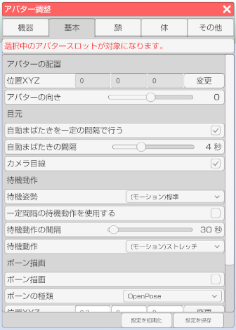

右側メニューのアバター調整のアイコンをクリックします。

体タブを選択します。

アバターのフェイストラッキングの調整や設定を行います。
右側メニューのアバター調整のアイコンをクリックします。

体タブを選択します。

アバターを複数読み込んでいる場合にどのアバターを対象にするかを選択します。
位置ＸＹＺ
アバターの位置を変更します。
アバターの向き
アバターの向きを変更します。
自動まばたきを一定の間隔で行う
オンにするとフェイストラッキングが動作していない場合に
アバターがまばたきをします。
自動まばたきの間隔
まばたきをするまでの間隔を変更します。
カメラ目線
オンにするとカメラの向いている方向に目線を向けます。
目の移動範囲が狭いモデルデータでは動きが小さくなります。
アバター調整「設定」タブの操作方法が「顔認識」の場合のみ動作します。
待機姿勢 (3teneFREE は非対応)
待機姿勢を設定します。
待機動作を使用する
オンにすると一定間隔で設定したモーションが動作します。
待機動作の間隔
待機動作が発生するまでの時間を変更します。
待機動作
ドロップダウンメニューで待機動作で使用するモーションを選択します。
呼吸動作を使用する
オンにすると一定間隔で呼吸モーションが動作します。
呼吸動作の間隔
呼吸動作の発生間隔を変更します。
呼吸の速さ
呼吸の速さを変更します。
ボーン描画
ボーン描画（表示）の有効、無効を切り替えます。
ボーンの種類
・Humanoid → VRM の仕様に合わせたボーンを描画します。
・OpenPose → OpenPose の仕様に合わせたボーンを描画します。
ボーンの位置を直接数値入力で調整します。
※小数での入力が可能です。
BVH ファイルを読み込んだ場合の動作設定を行います。
ループ
モーションを繰り返し再生します。
指を操作する
BVH に指の情報が含まれる場合に適用します。